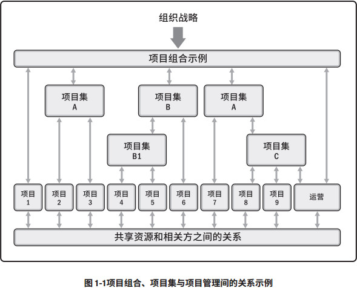
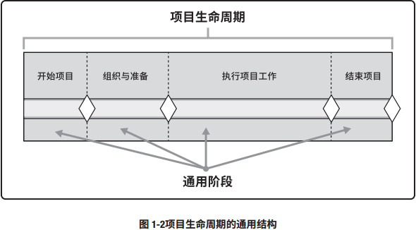
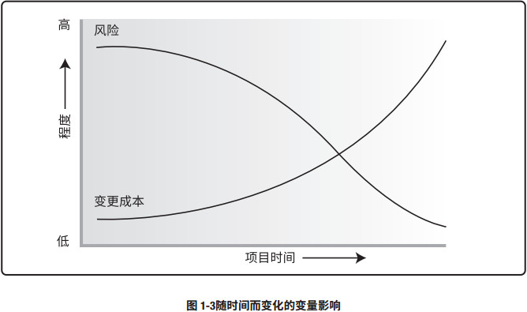
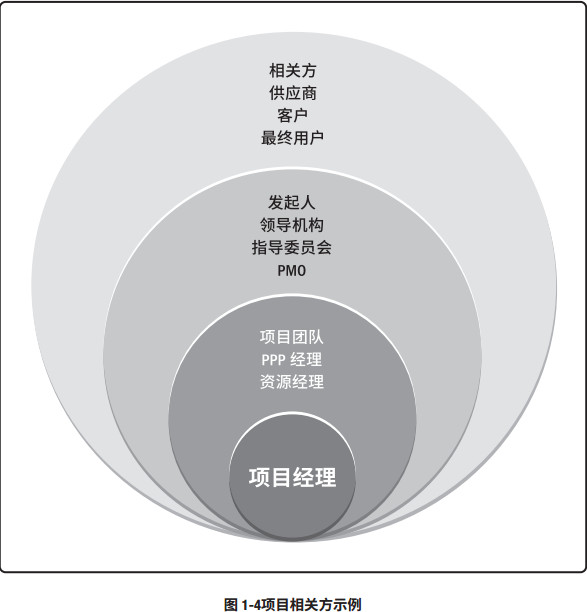
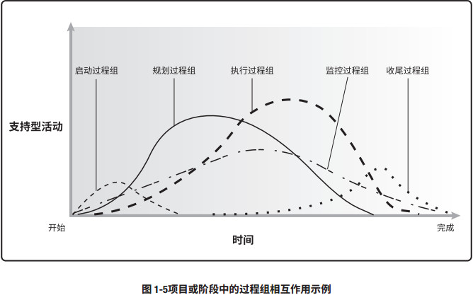
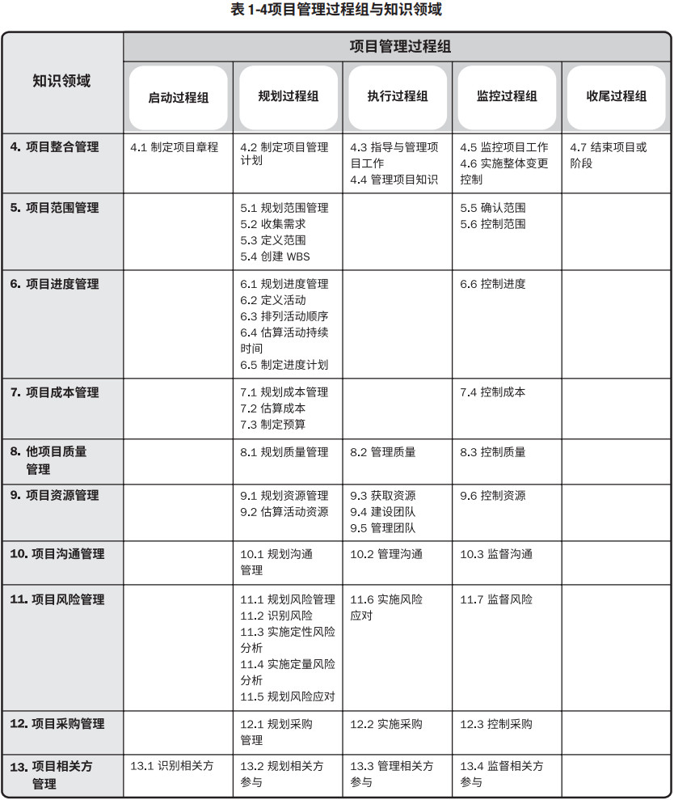
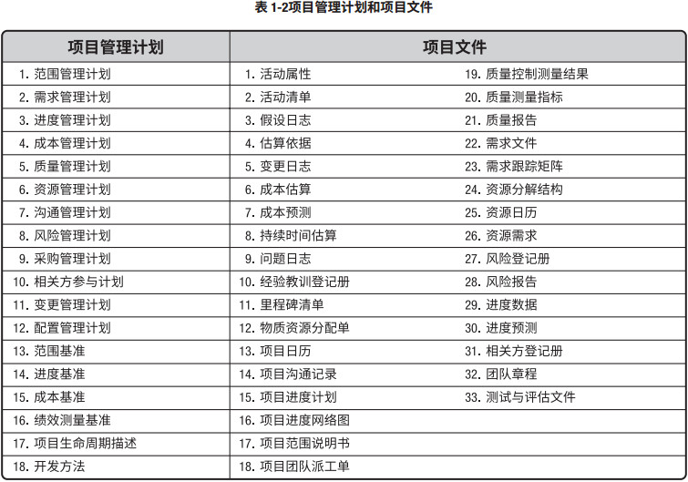

引论
标准是基于权威、惯例或共识而建立并用作模式或范例的文件。本标准的开发过程遵循协商一致、开放公开、程序公正和各方平衡的基本原则。本标准描述在大多数时候适用于大多数项目的、被视为良好实践的过程，并把这些过程归入相应的过程组。本标准也对关键的项目管理概念进行定义，包括项目管理与组织战略及目标的关系，项目管理与组织治理、项目组合管理、项目集管理、项目环境及项目成功之间的关系。本标准还介绍项目生命周期、项目相关方，以及项目经理的角色。第 1 章介绍一些基本概念，并提供有关项目管理的背景信息。第 2 章至第 6 章对五大过程组进行逐一定义，并描述其下属过程。第 2 章至第 6 章还描述各项目管理过程的主要作用、输入和输出。本标准将作为《项目管理知识体系指南》（《PMBOK® 指南》） 1 的基础和框架。《PMBOK® 指南》通过对相关背景、环境及其对项目管理的影响进行更深入的阐述，来扩展本标准的内容。此外，《PMBOK® 指南》也描述项目管理过程的输入和输出，识别项目管理过程的工具和技术，并按知识领域讨论一些重要概念和新趋势。
1.1 项目和项目管理
项目是为创造独特的产品、服务或成果而进行的临时性工作。项目的“临时性”是指项目有明确的起点和终点。“临时性”并不一定意味着项目的持续时间短。当项目目标达成时，或项目因不会或不能达到目标而中止，亦或是项目需求不复存在，则项目便已结束。结束项目的决定必须得到有关当局的审批。项目管理就是将知识、技能、工具与技术应用于项目活动，以满足项目的要求。项目管理通过合理运用与整合特定项目所需的项目管理过程得以实现。
管理一个项目通常包括（但不限于）：
- 识别项目需求；
- 处理相关方的各种需要、关注和期望；
- 与相关方建立并维护积极的沟通；
- 管理资源；以及
- 平衡相互竞争的项目制约因素，包括（但不限于）：
- 范围；
- 进度；
- 成本；
- 质量；
- 资源；
- 风险。
1.2 项目组合、项目集和项目之间的关系
项目组合是指为实现战略目标而协调管理的项目、项目集和子项目组合和运营工作。项目组合管理是指为了实现战略目标而对一个或多个项目组合进行的集中管理。项目组合管理的重点是确保项目组合与组织的目标保持一致，并且通过评估项目组合组件来优化资源分配。项目组合可能会包含运营性质的工作。项目集是相互关联且被协调管理的项目、子项目集和项目集活动，以便获得分别管理所无法获得的利益。项目集包括所属单个项目范围之外的相关工作。项目集管理是指应用知识，技能和原则以实现项目集目标，获得分别管理相关项目集组件所无法实现的效益和控制。项目集也可能包含运营性质的工作。
项目集管理通过授权、变更或终止项目以及管理项目间的依赖关系来支持组织战略。管理项目间的依赖关系可能包括以下行动：
- 解决影响项目集内各组件的资源制约因素和（或）资源冲突；
- 确保符合对项目集目的和目标有影响的组织战略；
- 在同一个治理结构内处理相关问题和开展变更管理；
- 应对可能影响一个或多个组件的项目和项目集风险；
- 通过有效分析、排序和监督各组件之间的依赖关系来管理项目集效益的实现。
图 1-1 所示的项目组合结构表明了组件、共享资源和相关方之间的关系。将项目组合组件归组，有利于促进对工作的有效治理和管理，排列各组件的优先级，并实现组织战略。在开展组织和项目组合规划时，要基于风险、资金和其他考虑因素对项目组合组件排列优先级。这有利于组织全面审查战略目标在项目组合中的落实情况，开展适当的项目组合、项目集和项目治理，以及分配人力、财力或物力资源。这些资源将根据预期的绩效和收益进行分配。如图 1-1 所示，组织战略与优先级相关联，项目组合与项目集之间、项目组合和项目之间以及项目集与单个项目之间都存在联系。但这些联系并不总是存在严格的等级层次。
组织级项目管理 (OPM) 是开展项目组合管理、项目集管理和项目管理的战略执行框架。该框架使组织不断地以可预见的方式取得更好的绩效、更好的结果及可持续的竞争优势，从而实现组织战略。

1.3 组织治理与项目治理之间的联系
治理类型多种多样，包括组织治理、组织级项目管理 (OPM) 治理，以及项目组合、项目集和项目治理。组织治理通过制定政策和流程，用结构化方式指明工作方向并进行控制，以便实现战略和运营目标。组织治理通常由董事会执行，以确保对相关方的最终责任得以落实，并保持公平和透明。组织治理原则、决策和过程可能通过以下方式影响项目组合、项目集和项目的治理：- 执行法律、法规、标准和合规性要求；
- 明确伦理、社会和环境职责；
- 制定运营、法律和风险政策。
项目治理是指用于指导项目管理活动的框架、功能和过程，从而创造独特的产品、服务或结果以满足组织、战略和运营目标。项目层面的治理包括：
- 指导和监督对项目工作的管理；
- 确保遵守政策、标准和指南；
- 确立治理角色、职责和职权；
- 关于风险上报、变更和资源（例如团队、财力、物力、设施）的决策；
- 确保相应相关方的参与；
- 监督成效。
项目治理框架为项目相关方提供管理项目的结构、过程、角色、职责、终责和决策模型。项目治理框架的内容包括（但不限于）以下原则或过程：
- 阶段关口或阶段审查；
- 识别、上报和解决风险及问题；
- 明确角色、职责和职权；
- 开展项目知识管理并吸取项目经验教训的过程；
- 超出项目经理职权的决策制定、问题解决和需上报议题；
- 审查和批准超出项目经理职权的项目变更及产品变更。
1.4 项目成功与效益管理
启动项目旨在抓住与组织的战略目标相符的商业机会。在启动项目之前，通常需要编制商业论证，以概述项目目标、所需投资，以及用于测量项目成功的财务标准和其他量化标准。商业论证为在整个项目生命周期中衡量项目成功和进展奠定了基础，以便把实际结果与预定的目标和成功标准进行比较。项目的启动通常出于以下一项或多项战略考虑：
- 市场需求；
- 战略机会/业务需求；
- 社会需要；
- 环境考虑；
- 客户要求；
- 技术进步；
- 法律或法规要求；
- 现有问题或已预见到的问题。
效益管理计划描述项目效益的实现方法和时间及其衡量方式。效益管理计划可能包括以下内容：
- 目标效益。 使用产品、服务或成果而预期获得的有形和无形商业价值。
- 战略一致性。 项目效益如何支持组织的业务战略并与之保持一致。
- 实现效益的时限。 效益按阶段划分，包括：短期效益、长期效益和持续性效益。
- 效益责任人。 在效益实现计划规定的整个时限内，监督、记录和报告效益实现情况的责任个人或小组。
- 测量指标。 用于考核效益实现情况的直接和间接方法。
- 风险。 与实现目标效益有关的风险。
根据项目目标和成功标准考核项目的成功程度。在许多情况下，产品、服务或成果的成功只有在项目完成后一段时间方能知晓。例如，在项目产品、服务或成果交付运营时，市场份额增加、运营成本降低或新产品成功可能都是未知的。在这些情况下，项目管理办公室 (PMO)、项目组合指导委员会或组织内的其他职能部门，应该在稍晚时间才对项目成功进行评估，以确定结果是否符合业务目标。
商业论证和效益管理计划都是在项目启动之前编制的，并且要成为项目完成之后评估项目成功的依据。因此，它们被视为商业文件，而非项目文件，或者项目管理计划的组成部分。这些商业文件可能成为某些项目管理过程的输入，例如，制定项目章程。
1.5 项目生命周期
项目生命周期指项目从开始到完成所经历的一系列阶段。项目阶段是一组具有逻辑关系的项目活动的集合，通常以一个或多个可交付成果的完成为结束。这些阶段之间可能是顺序、迭代或交叠的关系。项目阶段的名称、数量和持续时间取决于参与项目的一个或多个组织的管理与控制需要、项目本身的特征及其所在的应用领域。阶段都有时限，有一个起始点、结束点或控制点（有时称为阶段审查、阶段关口或控制关口，也可以用其他类似名称）。在控制点，需要根据当前环境，重新审查项目章程和商业文件。在该时点，把项目绩效与项目管理计划进行比较，以确定项目是否应该变更、终止或按计划继续。项目生命周期会受组织、行业、开发方法或所用技术的独特性质的影响。虽然每个项目都有起点和终点，但具体的可交付成果及工作会因项目的不同而有很大差异。不论项目涉及的具体工作是什么，生命周期都可以为管理项目提供基本框架。
虽然项目规模及复杂程度各不相同，但是典型项目都呈现下列项目生命周期结构（见图 1-2）：
- 开始项目；
- 组织与准备；
- 执行项目工作；
- 结束项目。

通用的生命周期结构一般具有以下特征：
- 成本与人力投入在开始时较低，在工作执行期间逐渐增加，并在项目快要结束时迅速回落。
- 项目开始时风险最大，如图 1-3 所示。在项目的整个生命周期中，随着决策的制定与可交付成 果的验收，风险会逐步降低。
- 在不显著影响成本和进度的前提下，相关方改变项目产品最终特性的能力在项目开始时最大， 并随项目进展而减弱。图 1-3 表明，做出变更和纠正错误的成本，通常会随着项目越来越接近 完成而显著增高。

1.6 项目相关方
相关方是指可能影响项目决策、活动或结果的个人、群体或组织，以及会受或自认为会受项目决 策、活动或结果影响的个人、群体或组织。项目相关方可能来自项目内部或外部，可能主动或被动 参与项目，甚至完全不了解项目。项目相关方可能对项目施加积极或消极影响，也可能受项目的积 极或消极影响。相关方包括（但不限于）：- 内部相关方：
- 发起人；
- 资源经理；
- 项目管理办公室（PMO）；
- 项目组合指导委员会；
- 项目集经理；
- 其他项目的项目经理；
- 团队成员。
- 外部相关方：
- 客户；
- 最终用户；
- 供应商；
- 股东；
- 监管机构；
- 竞争者。

图 1-4 为项目相关方的示例。有些相关方只是偶尔参与项目调查或焦点小组活动，有些则为项目提供全方位资助，包括资金支持、政治支持或其他类型的支持。在整个项目生命周期内，他们参与项目的方式和程度可能差别很大，因此，在整个项目生命周期中，有效识别和分析相关方，引导他们合理参与，并有效管理他们对项目的期望和参与，对项目成功至关重要。
1.7 项目经理的角色
项目经理是指由执行组织委派，领导团队实现项目目标的个人。项目经理的报告关系依组织结构和项目治理而定。除了具备项目所需的特定技能和通用管理能力，项目经理至少还应具备以下特性：
- 掌握关于项目管理、商业环境、技术领域和其他方面的知识，以便有效管理特定项目；
- 具备有效领导项目团队、协调项目工作、与相关方协作、解决问题和做出决策所需的技能；
- 形成编制项目计划（包括范围、进度、预算、资源、风险计划等）、管理项目工作，以及开展 陈述和报告的能力；
- 拥有成功管理项目所需的其他特性，如个性、态度、道德和领导力。
- 领导力；
- 团队建设；
- 激励；
- 沟通；
- 影响力；
- 决策；
- 政治和文化意识；
- 谈判；
- 引导；
- 冲突管理；
- 教练技术。
项目经理的成功取决于项目目标的实现。相关方的满意程度是衡量项目经理的成功的另一标准。项目经理应处理相关方的需要、关注和期望，令有关的相关方满意。为了取得成功，项目经理应该裁减项目方法、生命周期和项目管理过程，以满足项目和产品要求。
1.8 项目管理知识领域
项目管理知识领域是管理各种项目时需普遍使用的专业知识领域。每个知识领域都是项目管理中的一个特定主题，以及与该主题相关的一组过程。这10大知识领域在大多数时候适用于大多数项目。某类特定项目可能需要额外的知识领域。这 10 大知识领域包括：- 项目整合管理项目整合管理包括为识别、定义、组合、统一和协调各项目管理过程组的各种过 程和活动而开展的过程与活动。
- 项目范围管理项目范围管理包括确保项目做且只做所需的全部工作，以成功完成项目的各 个过程。
- 项目进度管理项目进度管理包括为管理项目按时完成所需的各个过程。
- 项目成本管理项目成本管理包括为使项目在批准的预算内完成而对成本进行规划、估算、 预算、融资、筹资、管理和控制的各个过程。
- 项目质量管理项目质量管理包括把组织的质量政策应用于规划、管理、控制项目和产品质量要 求，以满足相关方的期望的各个过程。
- 项目资源管理项目资源管理包括识别、获取和管理所需资源以成功完成项目的各个过程。
- 项目沟通管理项目沟通管理包括为确保项目信息及时且恰当地规划、收集、生成、发布、 存储、检索、管理、控制、监督和最终处置所需的各个过程。
- 项目风险管理项目风险管理包括规划风险管理、识别风险、开展风险分析、规划风险应对、 实施风险应对和监督风险的各个过程。
- 项目采购管理项目采购管理包括从项目团队外部采购或获取所需产品、服务或成果的各个过程。
- 项目相关方管理项目相关方管理包括用于开展下列工作的各个过程：识别影响或受项目影响的 人员、群体或组织，分析相关方对项目的期望和影响，制定合适的管理策略来有效调动相关方 参与项目决策和执行。
1.9 项目管理过程组
本标准描述用于实现项目目标的项目管理过程。项目管理过程可归为五大项目管理过程组：- 启动过程组定义一个新项目或现有项目的一个新阶段，授权开始该项目或阶段的过程。启动过程组详见第 2 章。
- 规划过程组明确项目范围，优化目标，为实现目标制定行动方案的过程。规划过程组详见第 3 章。
- 执行过程组完成项目管理计划中确定的工作，以满足项目要求的过程。执行过程组详见第 4 章。
- 监控过程组跟踪、审查和调整项目进展与绩效，识别必要的计划变更并启动相应变更的过程。监控过程组详见第 5 章。
- 收尾过程组正式完成或结束项目、阶段或合同所执行的过程（组）。收尾过程组详见第 6 章。
这五大过程组与应用领域（如营销、信息服务或会计）或行业（如建筑、航天、电信）无关。在阶段或项目完成之前，往往需要反复实施过程组中的单个过程。过程迭代的次数和过程间的相互作用因具体项目的需求而不同。过程通常分为三类：
- 仅开展一次或仅在项目预定义点开展的过程。 例如，制定项目章程，以及结束项目或阶段。
- 根据需要定期开展的过程。 例如，在需要资源时开展获取资源过程，在需要使用采购品之前开展实施采购过程。
- 需要在整个项目期间持续开展的过程。 例如，可能需要在整个项目生命周期持续开展定义活 动过程，特别是当项目使用滚动式规划或适应型开发方法时；从项目开始到项目结束需要持 续开展许多监控过程。
一个过程的输出通常成为另一个过程的输入，或者成为项目或项目阶段的可交付成果。例如，需要把规划过程组编制的项目管理计划和项目文件（如风险登记册、责任分配矩阵等）及其更新，提供给执行过程组作为输入。图 1-4 是各过程组在项目或阶段期间的重叠关系示例。
过程组不同于项目阶段。如果将项目划分为若干阶段，则各过程组中的过程会在每个阶段内相互作用。在一个阶段内可能需要使用所有的过程组，如图 1-5 所示。当项目被分为不同的阶段（例如概念开发、可行性研究、设计、原型、构建或测试等）时，各过程组中的过程根据需要在每个阶段中重复，直到达到该阶段的完工标准。

过程组和知识领域涵盖的 49 个过程如表 1-1 所示。

1.10 事业环境因素和组织过程资产
项目所处的环境可能对项目的开展产生有利或不利的影响。这些影响的两大主要来源为事业环境因素 (EEF) 和组织过程资产 (OPA)。事业环境因素源于项目外部（往往是企业外部）的环境，是项目团队不能控制且将影响、制约或指引项目的各种条件。事业环境因素可能对整个企业、项目组合、项目集或项目产生影响。（有关事业环境因素的更多信息，请参阅《PMBOK® 指南》第 2.2 节。）内部的组织文化、组织结构和组织治理就是事业环境因素中的一个类别，其中包括（但不限于）：愿景、使命、价值观、信念、文化传统、等级制度和职权关系。
组织过程资产源于企业内部，可能来自企业自身、项目组合、项目集、其他项目或这些的组合。组织过程资产是执行组织所特有并使用的计划、过程、政策、程序和知识库，会影响对具体项目的管理，包括（但不限于）：变更控制程序、模板、来自以往项目的信息和经验教训知识库。（有关组织过程资产的更多信息，请参阅《PMBOK® 指南》第 2.3 节）。
1.11 裁剪项目工件
在本标准中，术语“工件”包括项目管理过程、输入、工具、技术、输出、事业环境因素和组织过程资产。项目经理和项目管理团队需要选择和调整合适的工件，用于其特定项目。这种选择和调整活动称为裁剪。每个项目的独特性决定了必须进行裁剪，因此，并非每个项目都需要每个过程、输入、工具、技术或输出。项目管理计划是最常用的工件，有许多组成部分，如子管理计划、基准和项目生命周期描述。子管理计划是与项目特定方面或知识领域相关的计划，如进度管理计划、风险管理计划和变更管理计划。进行裁剪时，需要确定特定项目所需的项目管理计划组件。项目管理计划是一种输入，而项目管理计划更新是本标准中许多过程的输出。在本标准中，不会在输入和输出表中直接列出单个项目管理计划组件，而是在该表下方的正文中列出每个过程可能用到的项目管理计划组件（输入）或可能得到的项目管理计划组件更新（输出）。所列出的组件仅为示例而已。在开展每个特定过程时，项目经理既非必须、也非限于用到上述输入或得到上述输出。
项目管理计划是主要的项目工件之一。另外，还有不属于项目管理计划但也可用于管理项目的其他文件。这些其他文件称为项目文件。与项目管理计划组件类似，过程所需的项目文件会因具体项目而异。项目经理负责确定过程所需的项目文件，以及将作为过程输出的项目文件更新。在本标准中，在输入和输出表下方的正文中列出的项目文件，仅为项目文件的可能示例，而非完整列表。
表 1-2 列出了项目管理计划的主要组件和主要的项目文件。虽然该表并未穷尽所有的计划组件和项目文件，但的确列出了有助于管理项目的常用计划组件和项目文件。

商业文件通常是在项目之外创建的文件，用作项目的输入。商业文件包括商业论证和效益管理计划。如何应用商业文件，将取决于公司文化和项目启动过程。
会影响项目的事业环境因素，以及可用于项目的组织过程资产，将因项目及其所处环境而异，所以并未在本标准中列出。